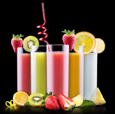

Website Plan
Purpose
According to the Study material, "Bountiful Foods is small business specializing in organic, locally grown foods. They are physically located in Carlsbad, California, however, they have many food trucks that cover the coastal area from Los Angeles to San Diego. The company sells fruits and produce directly from the farmers in the area, but also uses some national and international suppliers. The owner-operated company caters to walk in traffic at their storefront in Carlsbad and, of course, their food trucks. They deliver and manage those orders on the phone and via the website. The mission is to provide fresh and healthy food options, including organic, made to order, fruit drinks and fruit bags, to the local population and to tourists visiting the coastal areas. The theme should support healthy eating, organic bounty, and convenience.."
